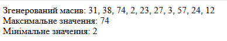
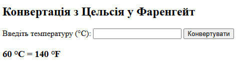

Тема: Робота з масивами та функціями
Виконавець: Старенький Богдан Сергійович
Група: KN1-B22
Напишіть скрипт для створення масиву із 10 випадкових чисел від 1 до 100. Виведіть максимальне та мінімальне значення.
Переглянути розв’язок Створіть функцію celsiusToFahrenheit($celsius), яка конвертує температуру з Цельсія у Фаренгейт.
Переглянути розв’язок 